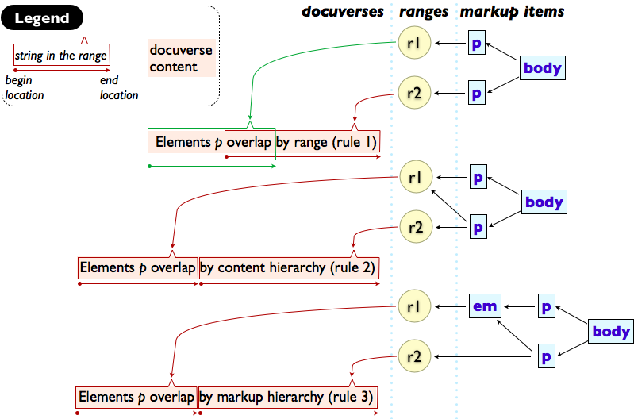
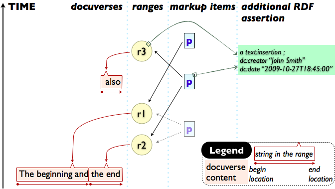
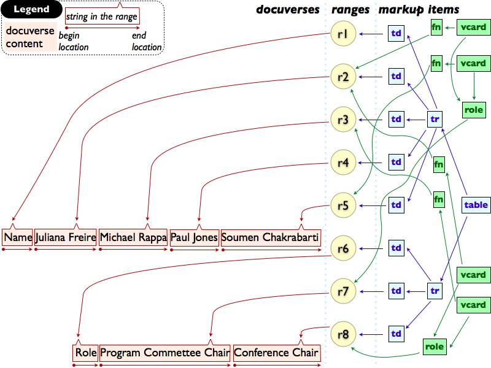
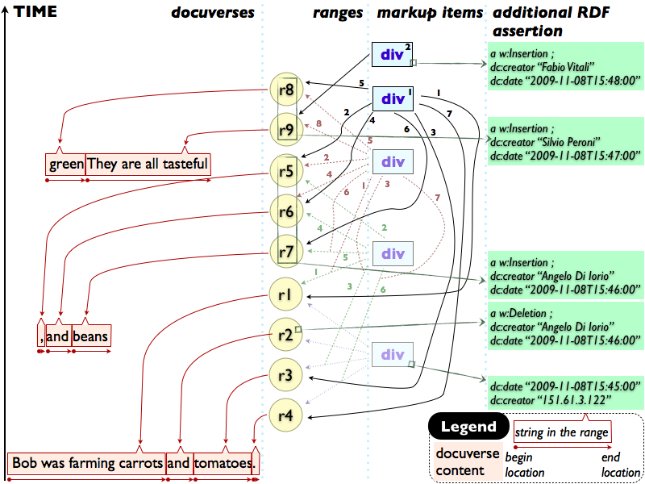

This HTML document links all the EARMARK documents presented in the submitted JASIST article A Semantic Web Approach To Everyday Overlapping Markup.
Each following section includes a descriptive figure of the document structure and the source of the related document, linearised in Turtle.
All the document examples are downloadable as archive too.
Markup items are the main structural entity of each EARMARK document. By means of the expressiveness of EARMARK, it is of course possible to create overlapping between them. As shown in Figure 1, we define that two markup items A and B overlap when at least one of the following sentences holds:

Figure 1. Three examples of overlapping between elements p.
A large number of XML-formats for word processors, when saving change tracking information, usually rely on two specific constructs for insertions and deletions that may overlap with the structural markup. For example, Figure 2 summarizes all the modifications concerning a simple excerpt from a word processor document. Look at WordProcessorChangeTracking.ttl for the related EARMARK implementation of it.

Figure 2. Structure of a simple word processor document, keeping track of the modifications.
Overlapping problems are present when the overall structure of an HTML table is at odds with the intrinsic hierarchy of some microformat data, as shown in Figure 3 in which five different hierarchies lie upon the same textual content. This scenario is easily expressible in EARMARK as implemented in MicroformatTable.ttl.

Figure 3. Structure of a table with microformats overlapping with different table cells.
Common wiki reversion mechanisms still have some significative limitations, e.g., the automatic filtering and merging of contributions from multiple versions of the same page is now still a manual process. Of course, it can be fully automatized if the overlapping structures buried in the whole history of the page become explicit, as shown in Figure 4. EARMARK allows to structure the article history explicitly, for example as implemented in WikiChangeTracking.ttl.

Figure 4. Structure describing the history of all the modifications done on a wiki page.